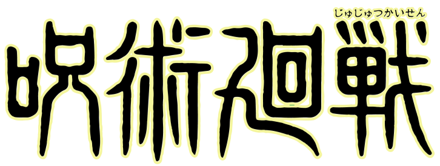
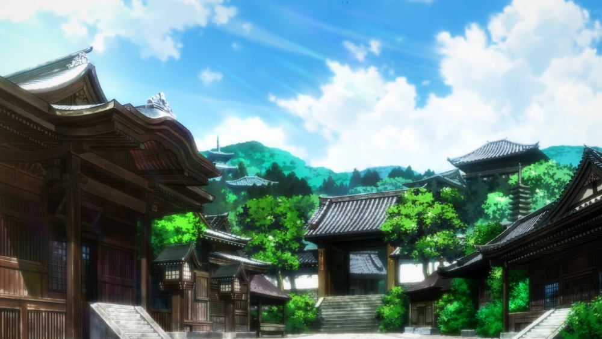

About
Credits
Contact
Tokyo Prefectural Jujutsu
High School
Tokyo Jujutsu High serves not only as a training ground for the next generation of sorcerers but a headquarters for all alumni who have graduated on to be full-fledged jujutsu sorcerers as well.
Sign Up
